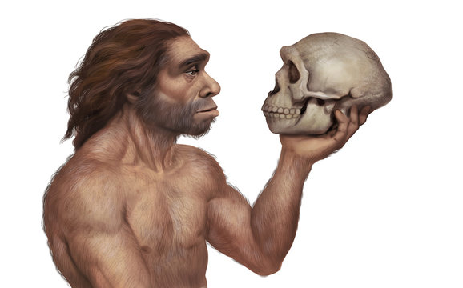
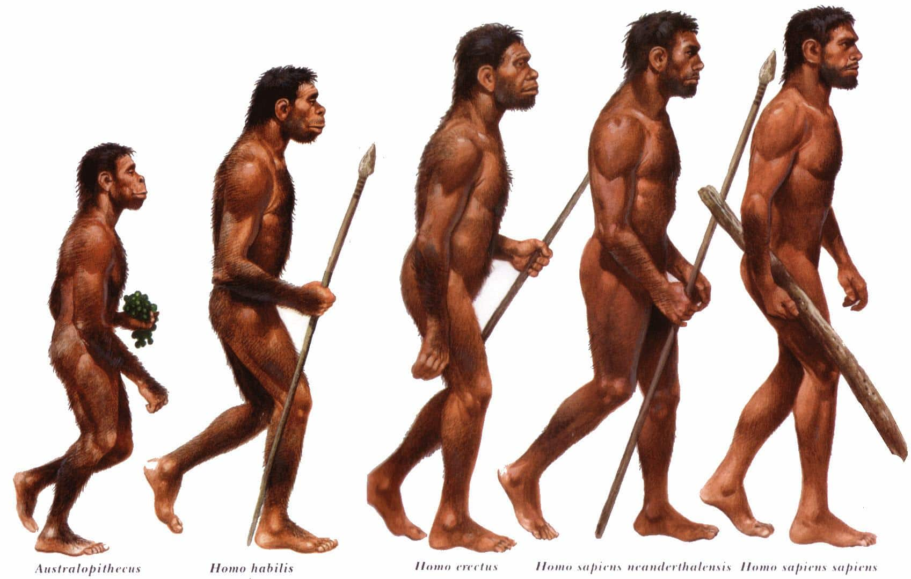
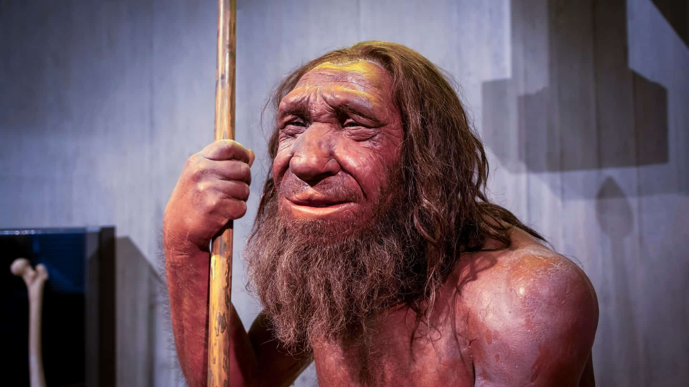

O que seria Homossapiens?
Homo sapiens significa "homem sábio" em latim e é o nome científico para a espécie humana moderna, à qual todos os seres humanos vivos pertencem. Esta espécie é definida por características como um cérebro bem desenvolvido, capacidade de linguagem, pensamento abstrato e uso de ferramentas, que foram cruciais para o desenvolvimento da inteligência, da cultura e da civilização humana.
Como evoluiram?
O Homo sapiens evoluiu a partir de outros hominídeos na África há cerca de 300.000 anos, passando por transformações morfológicas como um cérebro maior e uma constituição esquelética mais leve, e desenvolvendo comportamentos complexos como ferramentas sofisticadas, arte, rituais e o uso da linguagem. A espécie dispersou-se pelo globo, interagindo e misturando-se geneticamente com outras espécies humanas como os Neandertais, e adaptando-se a diferentes ambientes através de mudanças sociais e tecnológicas, como a domesticação de animais e o desenvolvimento da agricultura.
como se parecem?
Espécies do gênero Homo A espécie apresenta fósseis com idade de 2,4-1,6 milhões de anos, e destaca-se por presentar crânio maior que o do Australopithecus e uma mandíbula mais curta. Em relação ao Homo habilis, seu volume cerebral era de 600-750 cm3.